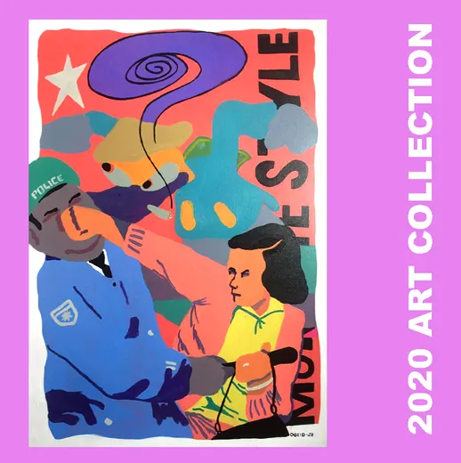
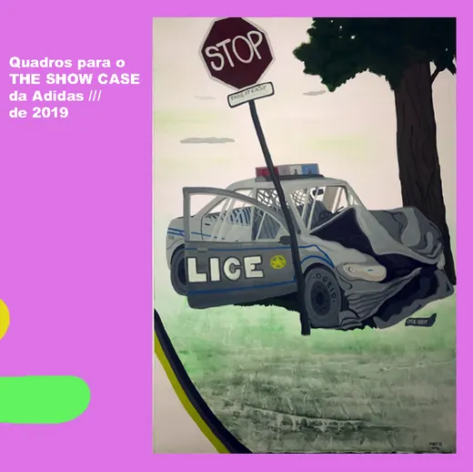
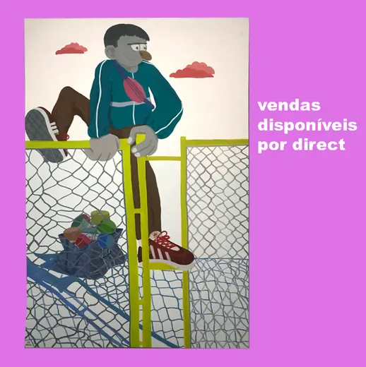
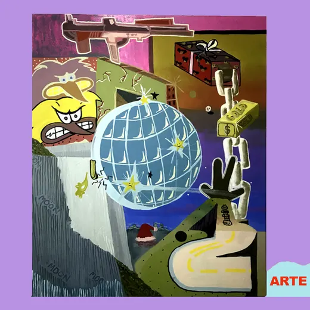
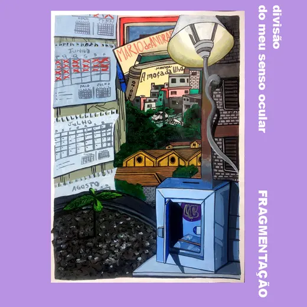
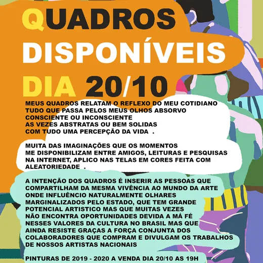
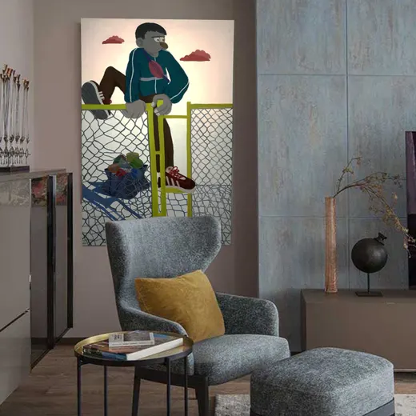

Pinturas · 2023
- Categoria
- Pintura
- Ano
- 2023
Reunião de pinturas de 2023, período em que se inicia a investigação pictórica de orientação neoexpressionista. As composições combinam figuras humanas, cenários urbanos e objetos do cotidiano — grades, viaturas, placas de trânsito, esquinas e vitrines — em campos de cor saturada e contornos marcados.
Entre os trabalhos há cenas de abordagem e vigilância, paisagens de cidade e imagens de caráter onírico, que alternam humor, tensão e ironia.
Conceito
Esta série estabelece o vocabulário que atravessa a produção posterior: personagens e símbolos da cultura urbana tratados como matéria pictórica para elaborar experiências pessoais, relações humanas e cotidiano. O gesto expressivo e a cor operam como linguagem, e não como ilustração de um enredo fechado.
Do arquivo















